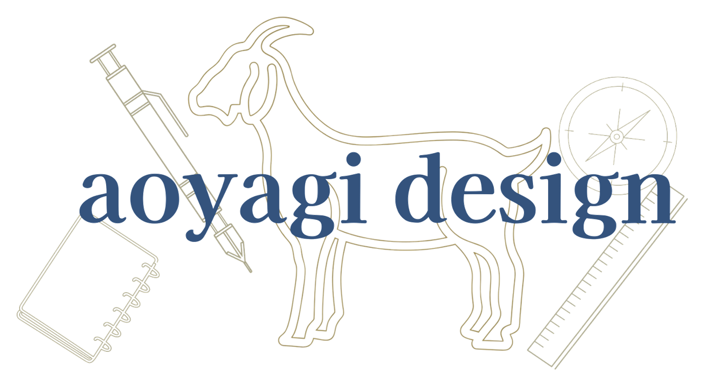

Androidアプリ開発
Kotlin / Jetpack Composeで、実用的な自動化アプリを設計・実装。
Design & Code Atelier

コードと図面のあいだで、かたちをつくる。
Kazuki Aoyagi
aoyagi design
moyashi manufacture 技術協力
はじめまして、青柳和貴です。まずはサイトに訪れてくれた方々に感謝します。私は今高校生で学生生活と製作を両立しながら日々いろいろなことに挑戦しています。
KotlinとJetpack Composeによるアプリ開発、Adobe Premiere Pro・After Effectsや Yukkuri Movie Maker を活用した動画製作、Onshapeを使った3D CAD設計、Pythonでのジェネラティブアート制作、自作PCの設計・組み立てまで。ジャンルを横断しながら「つくる」ことに向き合うのが好きです。
どの作業でも、細部の精度にはこだわっています。幅広く、深く、楽しくを第一に考えた製作を心掛け、目指していきます。
2018 — 9歳
小学校在学中、「Yukkuri Movie Maker 4」で動画編集に出会う。デジタルコンテンツ制作の楽しさに気づいた原点。
2022 — 13歳
中学校の「ものづくり・PC部」に入部。デザインの基礎を学びながら動画編集も続け、中学2年・3年で「にいがたデジコングランプリ」動画部門 奨励賞を2年連続受賞。
2025 — 現在（16, 17歳）
高校生になり、部活の仲間と再結成。3DプリンターとCADを本格的に学び、暮らしを便利にする道具を考え、つくっている。
Kotlin / Jetpack Composeで、実用的な自動化アプリを設計・実装。
Adobe Premiere Pro・After EffectsやYukkuri Movie Makerで制作。「にいがたデジコングランプリ」動画部門 奨励賞を2年連続受賞。
Onshapeと自作のPythonエクスポータで、精密なパーツ・筐体モデルを制作。
numpyやOpenCVを用いた画像生成と、質感・アニメーション表現。
ロゴタイプからカラーシステムまで、一貫したビジュアルアイデンティティを設計。
パーツ選定から組み立て、CADによる筐体検証まで一貫して行う。